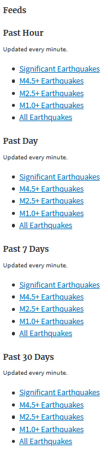
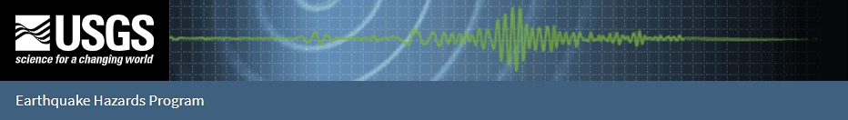
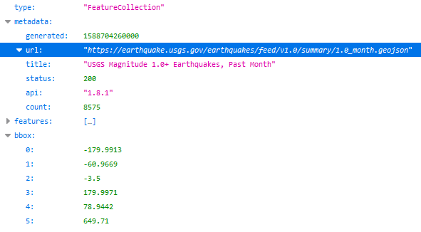

Earthquake Data Viz
Visualizing United States Geological Survey (USGS) Earthquake Data with Leaflet
Background
The
United States Geological Survey (USGS) is responsible
for providing scientific data about natural hazards, the health of our ecosystems and
environment; and the impacts of climate and land-use change. The have some of the top
scientists in the world who develop new methods and tools to supply timely, relevant,
and useful information about the Earth and its processes.
In this project, I built a set of tools that visualize USGS earthquake data. The robust
set of vizzes utilize massive amounts of data from all over the world each day to tell
important stories. Critical policy and funding decisions impacting the public health
and safety use this data.
1) Select the USGS Data Feed to Collect
I selected data collection for the past 30 days on earthquakes with a 1.0+ magnitude.

2) Collect the USGS Data Set Using an API
I selected data collection for the past 30 days on earthquakes with a 1.0+ magnitude.

The USGS provides earthquake data in a number of different formats, updated every 5 minutes at USGS Geo JSON Feed. When you click on a data set, for example 'All Earthquakes from the Past 30 Days,' you will be given a JSON representation of that data. I used the URL of this JSON to pull in the data for my visualization.
3) Visualize the Data
I created a map using Leaflet that plots all of the earthquakes from the
last 30 days with a magnitude of 1.0+ based on the longitude and
latitude
of the earthquake.
- The data markers reflect the magnitude of the earthquake in their size and color.
- Earthquakes with lower magnitudes appear smaller and in a blue or green color.
- Earthquakes with higher magnitudes appear larger and in an orange or red color.
- When clicking on a specific earthquake, the following additional information is provided:
- the earthquake's location to the nearest city;
- what time the earthquake occured (with GMT and EDT);
- the magnitude of the earthquake;
- the legends provides a range of magnitude with a color:

4) Upload to GitHub Pages
The final step was to upload this project to GitHubPages to create a live site.
Tools Used for this Project
- Javascript
- HTML
- JSON
- Leaflet
- GitHub and GitPages